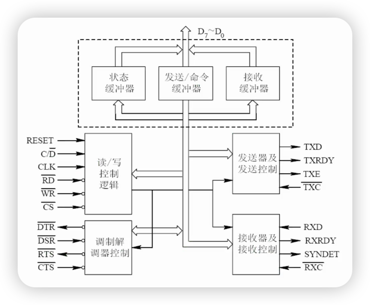
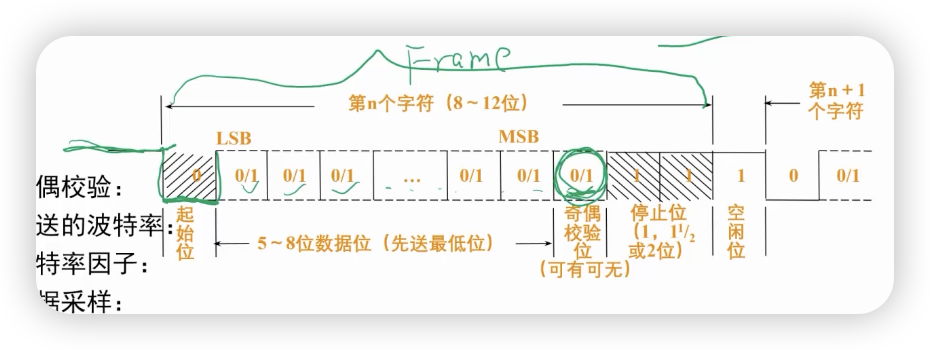
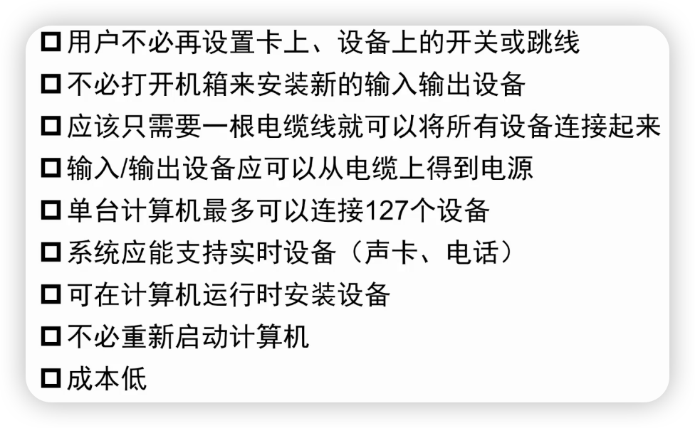
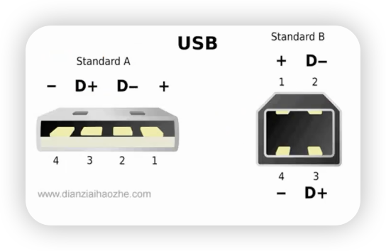
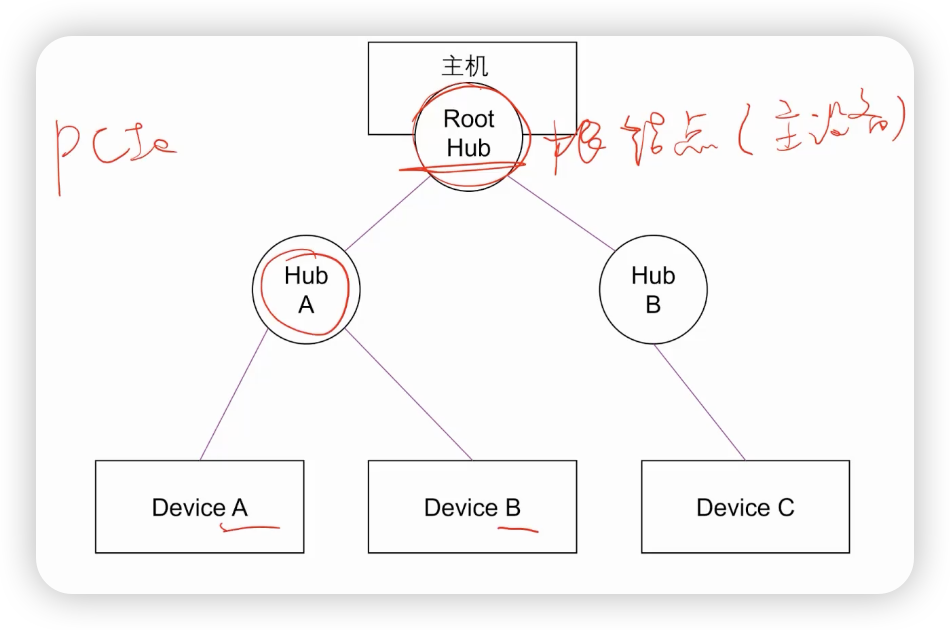
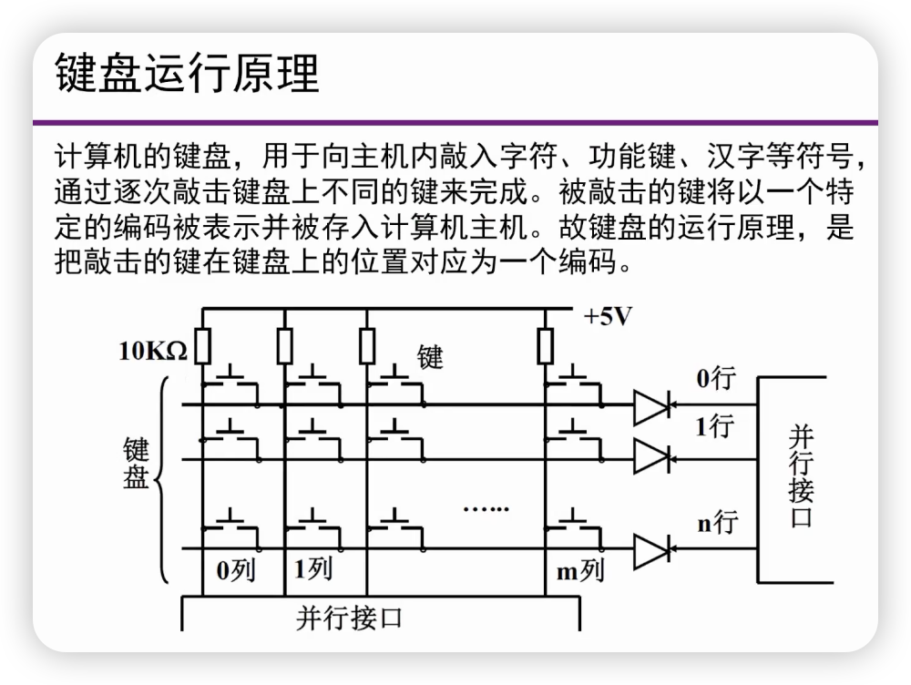
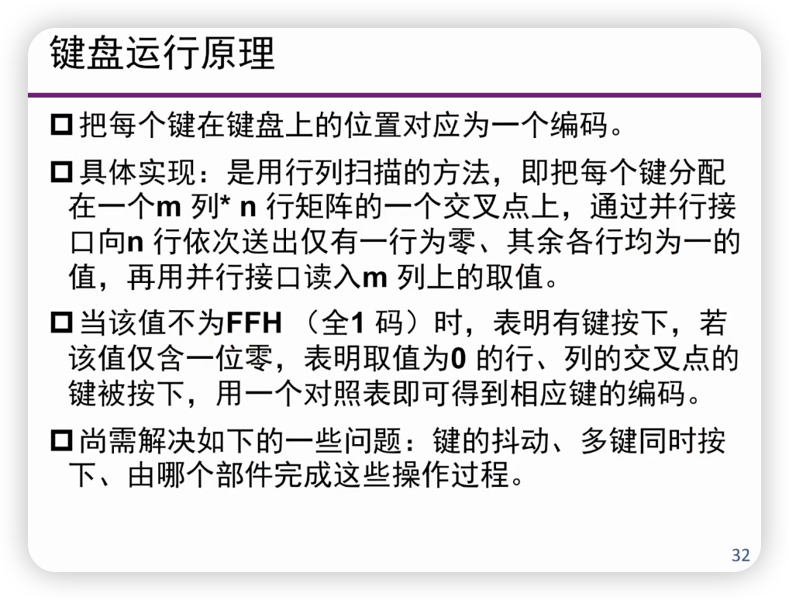
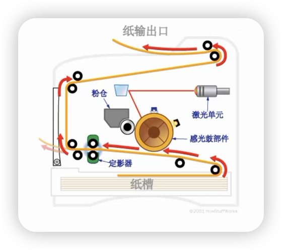

外设
接口的基本功能¶
- 提供主机识别（指定、找到）使用I/O设备的支持
- 为每个设备规定几个地址码或编号
- 建立主机和设备之间的控制与通信机制
- 接收处理器（主设备）的命令，并提交给外部设备，同时，为主设备提供外部设备的状态
- 提供主机和设备之间信息交换过程中的数据缓冲机构
- 提供主机和设备之间信息交换过程中的其他特别需求支持
- 屏蔽外部设备的差异
通用可编程接口电路¶
接口内部组成：
- 设备识别电路
- 数据缓冲寄存器（输入/输出）
- 控制寄存器、状态寄存器
- 中断电路
- 其他电路
串行接口芯片8251A¶
- 同步传送
- 5～8位/字
- 支持内同步或外同步
- 自动插入同步字符
- 异步传送
- 5～8位/字
- 时钟：1、16或64倍波特率
- 停止位：1、1.5或2位
- 可检测假启动
- 全双工
- 通信双方有各自的接收和发送数据线
- 双缓冲发送器和接受器
- 可检测奇偶错、数据丢失错和帧错


USB接口¶
连接外部慢速设备，支持热插拔


由4根线组成，电源、地和双数据线；同步传输方式
USB结构¶

USB工作原理¶
- 设备检测
- 根HUB定时查询接口状态，若检测到有设备接入到接口上，则为该设备赋地址（7位）。设备初始地址为0，每个设备上应有ROM，保存设备参数
- 128-1（主设备）=127个设备
- 识别设备类型后，由设备驱动程序管理和使用设备
- 操作系统支持
- 只有一个主设备，不需要仲裁，采用轮询方式，适合低速设备使用
- 设备带宽为1.5MB/s。适合一般的语音设备
USB帧¶
- 控制帧（Control Status）
- 配置设备，对设备发出命令，查询设备状态
- 同步帧
- 实时设备同步
- 块传送帧
- 非实时设备的大量数据传送
- 中断帧
- 发出中断帧，收集设备数据
接口¶
功能：
- 连接外部设备
- 设备识别
- 数据缓冲
- 协议实现
- 屏蔽差异
- 通过总线与主机进行通信
外部设备（外设）¶
功能：
- 完成数据的输入和输出
- 信号转换
- 数据采样
- 与接口进行连接
- 与主机进行通信
键盘¶


串行or并行
鼠标¶
输出设备¶
- 点阵式输出设备（视觉）
- 以点阵的组合来表示不同的形状
- 提供每个点的存储输出属性
- 点阵输出设备将点按属性规定的颜色和灰度输出
- 听觉
- 音乐、语音合成
- 触觉
- 可穿戴计算机
阴极射线管（CRT）显示器¶
- 成像原理：电子束打击显示屏
液晶显示器¶
- 显示原理：通过液晶改变透射光的偏振性
激光打印机¶

总结¶
输入/输出设备速度不一
作者: